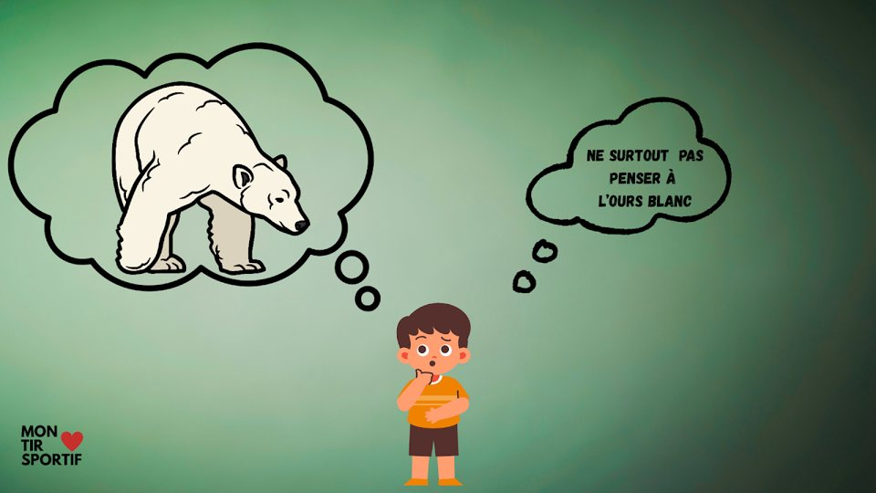
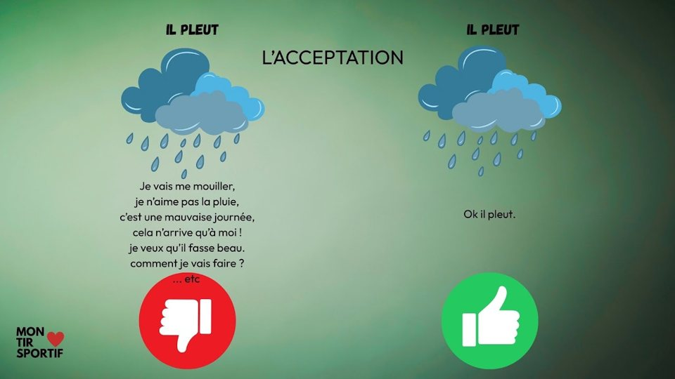
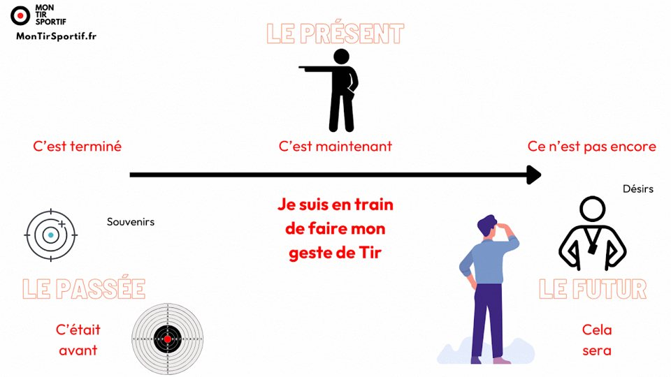
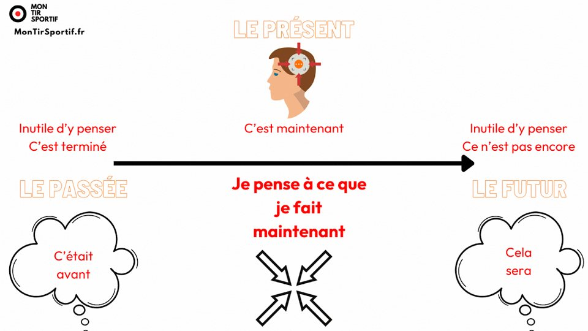
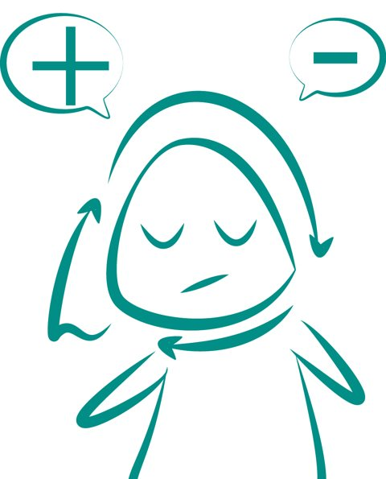
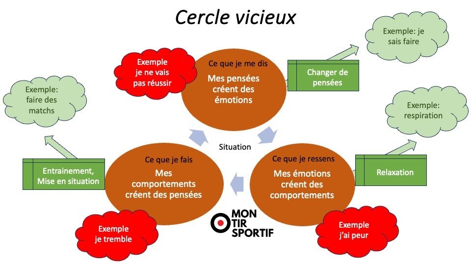

2Préparation mentale
Concentration, gestion du stress et confiance : apprendre à tirer avec sa tête autant qu'avec son bras.
Penser au geste, pas au score
Au pistolet, la différence entre deux tireurs de même niveau technique se fait souvent dans la tête. Bonne nouvelle : le mental s'entraîne, exactement comme le lâcher.
Rester dans le processus
Pensez à ce que vous faites (alignement, pression régulière), pas au résultat. Le score est la conséquence d'un geste bien exécuté.
Un coup à la fois
Un coup tiré est terminé. Analysez-le en une phrase, puis revenez à la routine. Le prochain coup est le seul qui compte.
Accepter l'imperfection
Même les champions tirent des 8. Ce qui compte, c'est de ne pas laisser un mauvais coup en entraîner d'autres.
Pourquoi le tir est un sport si mental
Au tir, le corps sert de support et c'est le mental qui exécute. Le geste est minime (quelques centaines de grammes sur la détente), le moindre tremblement se traduit en centimètres sur la cible, on est seul face à soi-même et aucun geste athlétique ne vient compenser une erreur.
Le mental en chiffres
| Aspect mental | Sport en général | Tir sportif |
|---|---|---|
| Part du mental dans la performance | 50 à 80 % au haut niveau | 80 à 95 % |
| Concentration | Importante | Centrale |
| Gestion du stress | Clé en compétition | Déterminante à chaque coup |
| Dialogue intérieur | Influence le comportement | Peut saboter chaque coup |
| Routine | Utile | Indispensable |
| Imagerie mentale | Bénéfique | Outil d'entraînement quotidien |
Estimations couramment citées : elles donnent un ordre de grandeur, pas une mesure.
Les outils propres au tir
- La routine : une séquence identique (respiration, placement, visée, lâcher) qui rassure.
- Un mot-clé pour entrer dans la concentration : « calme », « guidon », « lâcher ».
- L'imagerie motrice : vivre mentalement le coup parfait, la sensation de la détente et du relâchement.
- La cohérence cardiaque pour faire baisser la fréquence cardiaque.
- Penser au processus (comment je tire), pas au résultat (le score).
Une préparation mentale : pour qui, quand ?
- Elle complète le travail technique, physique, matériel et tactique, sans le remplacer.
- Elle s'adresse à tous : jeunes et adultes, loisir et compétition, et aussi aux entraîneurs.
- Elle se commence en début de saison, bien avant les grandes compétitions : c'est un travail progressif, sans solution miracle.
- Elle porte sur la motivation (objectifs), les émotions (le stress est une réaction normale), la confiance en soi et la relation au groupe.
- L'entraîneur est souvent le premier accompagnateur mental ; un préparateur mental qualifié peut prendre le relais.
Vidéos pour aller plus loin
Au programme : la confiance en soi en tir de précision, la perfection (Roger Federer, « Et tout le monde s'en fout »), les Causeries du sport, la psychologie du sport et l'anxiété compétitive, réhabiliter l'incertitude, surmonter la peur de l'échec (Patrick Mouratoglou), la pensée positive.
Le mental, vidéo 1 · YouTube ↗
Le mental, vidéo 2 · YouTube ↗
Le mental, vidéo 3 · YouTube ↗
Le mental, vidéo 4 · YouTube ↗
Le mental, vidéo 5 · YouTube ↗
Le mental, vidéo 6 · YouTube ↗
Le mental, vidéo 7 · YouTube ↗
Le mental, vidéo 8 · YouTube ↗
Le mental, vidéo 9 · YouTube ↗
Le mental, vidéo 10 · YouTube ↗
Le mental, vidéo 11 · YouTube ↗
Le mental, vidéo 12 · YouTube ↗

Source : montirsportif.com/le-mental ↗
À voir aussi sur bensport
▶ Préparation mentale : augmenter son potentiel psychologique
La motivation : trois théories utiles
Après les motivations intrinsèque et extrinsèque, trois théories aident à comprendre ce qui entretient l’envie de s’entraîner.
Ce qui l'influence
- En soi : personnalité, histoire, confiance, objectifs clairs, plaisir.
- Autour de soi : relation avec l'entraîneur, ambiance du club, retours reçus, conditions d'entraînement.
Ce qui l'abîme
- La pression excessive sur le résultat.
- Des récompenses qui étouffent le plaisir.
- Pas d'objectif, ou un objectif trop lointain.
- Des blessures à répétition, l'épuisement (burn-out sportif).
Faites le point sur vos propres sources de motivation avec le questionnaire de motivation ↗ de montirsportif.com (échelle de 1 à 7, rapport PDF).
Source : montirsportif.com/la-motivation ↗
À voir aussi sur bensport
L’entretien d’explicitation
Créée par Pierre Vermersch, cette méthode fait décrire très précisément ce que l'on a fait, perçu et décidé pendant un moment vécu, daté et précis : ce que l'on fait « sans y penser ». Objectif : comprendre ce qui se passe quand ça marche, pour le reproduire.
Mettre en confiance et cadrer
Un lieu calme, 20 à 45 minutes, une démarche expliquée sans orienter les réponses. Choisir une situation précise : « le 5ᵉ plomb de la série ».
Faire revivre la scène
Au passé, à la première personne : où étiez-vous, que voyiez-vous, qu'entendiez-vous ? Le regard qui se perd et les réponses qui ralentissent montrent qu'on y est.
Explorer instant après instant
Posture, respiration, mise en visée, attention, départ du coup, après-coup. On fait préciser le concret, sans juger ni interpréter.
Repérer les invariants
Ce qui revient quand le coup est bon : appuis, points d'attention, indices sensoriels, rythmes, micro-décisions.
Synthétiser et transférer
2 ou 3 consignes personnelles, une routine, une check-list mentale, des notes dans le carnet.
Exemples de questions au pistolet 10 m
- Quand vous sentiez vos appuis, qu'est-ce qui vous disait que vous étiez stable ?
- À quel moment de la respiration avez-vous commencé à lever le bras ?
- Quel est le premier élément que vous avez regardé sur le guidon ?
- Décrivez au ralenti la pression sur la détente, juste avant le départ.
- Après le coup, qu'avez-vous fait avant de baisser le bras ?
Seul : l'auto-explicitation
- Choisir une séquence réussie ou difficile.
- S'y replacer mentalement.
- Décrire ce que l'on perçoit, fait, décide et ressent, sans interpréter.
- Repérer ses indices de réussite.
- En tirer des consignes personnelles.
La concentration
La concentration n'est pas un effort permanent : on ne peut pas rester concentré à 100 % pendant tout un match. On alterne des phases de relâchement entre les coups et des phases de concentration intense de quelques secondes, au moment de la visée et du lâcher.
- Entre deux coups : regard au loin ou au sol, épaules relâchées, respiration lente.
- Au début de la routine : on « allume » la concentration avec un geste ou un mot-clé toujours identique.
- Pendant la visée : l'attention est sur une seule chose, le guidon et la pression sur la détente.
Mots-clés
Choisissez 1 ou 2 mots courts qui résument votre geste, et répétez-les intérieurement pendant la routine :
- « Guidon » : pour garder la netteté sur le guidon.
- « Presse » ou « continue » : pour un lâcher progressif.
- « Calme » : pour relâcher la tension avant de monter le bras.
L'esprit de singe
L'« esprit de singe » (monkey mind, une expression venue du bouddhisme) désigne des pensées qui sautent sans cesse d'une idée à l'autre, comme un singe de branche en branche : le score de la série précédente, le voisin, le coup raté, ce qu'il faudrait corriger…
Quand apparaît-il ?
Surtout sous forte pression, ou quand on poursuit un objectif avec beaucoup de perfectionnisme : une compétition importante, une série qu'on veut « parfaite ».
Ce qu'il provoque
- Du mal à organiser ses pensées.
- Une concentration qui s'échappe : on perd de vue l'essentiel.
- Une fatigue rapide, des distractions faciles.
- L'envie d'abandonner ce qu'on est en train de faire.
Au pas de tir, ce bavardage intérieur disperse l'attention au moment où elle devrait être tout entière sur le guidon et le lâcher.
Le calmer
Gérer le stress
Le stress fait monter le rythme cardiaque, crispe les muscles et pousse à accélérer. C'est normal, surtout en compétition : l'objectif n'est pas de le supprimer, mais de le garder à un niveau utile.
La respiration ventrale
Assis ou debout, une main sur le ventre :
Signes d'alerte
- Vous tirez de plus en plus vite.
- Vous regardez chaque impact et calculez votre score.
- Votre prise se crispe, vos visées s'allongent.
La visualisation
Visualiser, c'est répéter le geste dans sa tête, avec le plus de détails possible : ce que l'on voit, ce que l'on ressent dans le bras et le doigt, le bruit du départ. Le cerveau active des circuits proches de ceux du geste réel.
Visualisation et imagerie motrice
La visualisation fait voir le geste ; l'imagerie motrice le fait ressentir : sensations musculaires, équilibre, pression du doigt. Dans les deux cas, les aires motrices du cerveau s'activent presque comme pendant le geste réel.
| Visualisation | Imagerie motrice | |
|---|---|---|
| Sens | Surtout la vue | Le corps : muscles, équilibre, toucher |
| Point de vue | Interne ou externe | Interne |
| Usage | Corriger la posture, préparer la routine | Ancrer les sensations du geste juste |
Que ressentir ?
- Le relâchement du bras, de l'épaule et du dos ; la stabilité et l'équilibre ; le poids de l'arme.
- Une pression progressive et homogène sur la détente, puis le départ, sans mouvement parasite.
- La tête bien placée, le guidon net, centré et stable dans le cran de mire.
L'intérêt est simple : on ne peut pas répéter des centaines de fois un geste aussi fin sans fatigue. L'imagerie motrice multiplie les répétitions de qualité : c'est un entraînement invisible.
La visualisation, vidéo 1 · YouTube ↗
La visualisation, vidéo 2 · YouTube ↗
La visualisation, vidéo 3 · YouTube ↗
La visualisation, vidéo 4 · YouTube ↗
La visualisation, vidéo 5 · YouTube ↗
Source : montirsportif.com/la-visualisation ↗
Confiance et objectifs
Objectifs de processus
Fixez-vous des objectifs sur le geste (« 10 lâchers progressifs sur 10 », « je repose l'arme si la visée dure trop ») plutôt que seulement sur le score.
Discours intérieur
Parlez-vous comme un bon entraîneur : phrases courtes, positives, tournées vers l'action. « Bon geste, on continue » plutôt que « encore raté ».
Carnet de tir
Notez séances, sensations, réglages et résultats. Relire ses progrès est la meilleure source de confiance.
Ne pensez pas à l'ours blanc
« Le but n'est pas le but, c'est la voie. » (Lao-Tseu)

L'anecdote de Tolstoï
Enfant, on demanda à Tolstoï de rester dans un coin sans penser à un ours blanc. Impossible : l'ours ne le quittait plus. Plus on cherche à chasser une pensée, plus elle revient. C'est l'effet rebond.
Au pas de tir, c'est la même chose. Se dire « ne pense pas au score » ramène le score au premier plan, et l'attention n'est plus sur le coup à tirer.
Accepter plutôt que chasser
- Remarquer la pensée quand elle arrive (« tiens, je pense au score »).
- Ne pas la juger et ne pas s'y accrocher : la laisser passer.
- Revenir au geste : la visée, le lâcher. L'énergie qu'on ne dépense pas à lutter reste disponible pour le coup.

L'acceptation, c'est quoi ? Exemple avec la pluie (MonTirSportif)
L'acceptation, par Christophe André
La thérapie de l'acceptation (dialogue avec François Bourgognon)
Pourquoi imagine-t-on le pire quand on est stressé ?
Rester dans le présent, penser en positif
Passé, présent, futur
- Le passé, c'est terminé : le coup précédent, les souvenirs. Inutile d'y penser.
- Le futur, ce n'est pas encore : le résultat, les désirs. Inutile d'y penser.
- Le présent, c'est maintenant : « je pense à ce que je fais maintenant », mon geste de tir.
Se concentrer sur la solution
- Mes sensations : mon équilibre, la pression du doigt sur la queue de détente, le regard sur le guidon…
- Ma séquence de tir : les actions, leur enchaînement, la coordination…
Voir la routine de tir.


Remplacer le négatif par du positif
| Au lieu de… | Je dis… |
|---|---|
| Un échec | Une expérience |
| Une erreur | Une leçon |
| Une difficulté | Un défi |
| C'est trop difficile | Comment puis-je réussir ? |
| J'aimerais | Je veux |
| Je vais essayer | Je vais réussir |
| C'est pas mal | C'est bien |
| C'est stressant | C'est stimulant |

Illustrations MonTirSportif, reprises du site MTS Entraînement (préparation mentale, partie Marc Verillotte).
Pensées, émotions, comportements : sortir du cercle vicieux
Les TCC partent d'une idée simple : mes pensées créent des émotions, mes émotions créent des comportements, et mes comportements créent de nouvelles pensées. Au pas de tir, ce cercle peut s'emballer.

« Je ne vais pas réussir. » Sortie : changer de pensée, par exemple « je sais faire ». Voir penser en positif.
« J'ai peur. » Sortie : la relaxation, par exemple la respiration. Voir cohérence cardiaque et 4-7-8.
« Je tremble. » Sortie : l'entraînement et la mise en situation, par exemple faire des matchs. Voir les contrats.
À voir aussi sur bensport
Les contrats et le duel, une école du sang-froid
Les contrats
Un contrat simule la pression du match : atteindre un score, tenir un minimum ou progresser coup après coup. Le contrat raté est perdu, et il faut parfois tout recommencer.
La pression monte à l'approche de la fin, et les pensées sur le score prennent la place de l'attention dont le coup a besoin. Peut-on s'empêcher de penser au score ? Non (voir l'ours blanc) : on apprend plutôt à reconnaître la pression et à l'accepter.
Variez les contrats pour garder de la fraîcheur, et gardez-en un pour finir la séance de façon ludique.
Conserver sa concentration : le duel
Deux tireurs s'affrontent en direct. Le tireur patient, qui reste concentré sur chaque coup, l'emporte le plus souvent ; l'impatient perd la qualité de son geste.
La vitesse n'est pas la précipitation.
Cohérence cardiaque et respiration 4-7-8
La cohérence cardiaque
Suivre du regard une forme qui se gonfle et se dégonfle, et respirer à son rythme : 5 minutes, 3 fois par jour. Les vidéos ci-dessous servent de guide.
La respiration 4-7-8
Une respiration anti-stress : inspirer 4 secondes, retenir 7 secondes, expirer 8 secondes.
5 minutes de cohérence cardiaque (Florence Servan-Schreiber)
Cohérence cardiaque, exercice de respiration (Hôpitaux universitaires de Genève)
Respiration 4-7-8
Voir aussi la respiration dans le geste de tir.
Regards inspirants sur le mental
Marc Verillotte, ancien judoka et policier du RAID blessé en service, explique comment on apprend à programmer son mental face à un stress intense (TEDx).
André Comte-Sponville distingue la cible visée (skopos) et l'acte lui-même (telos) : l'archer sage cherche à bien tirer, pas seulement à toucher.
Jean Quincampoix, tireur de vitesse, partage son regard sur le fonctionnement mental des sportifs.
Christian Target, coach en performance mentale, sur la façon de développer son estime de soi.
Pierre David : comment changer d'état émotionnel, dans le sport comme ailleurs.
Yoann Bourgeois, artiste, construit un spectacle d'équilibre et de suspension sur un trampoline : une belle image de la maîtrise de soi.
Gérer son stress : l'expérience du RAID (Marc Verillotte, TEDx)
Regard sur le sport (André Comte-Sponville)
Jean Quincampoix, le mental des athlètes
Développer son estime de soi (Christian Target)
Changer d'état émotionnel (Pierre David)
Fugue / Trampoline (Yoann Bourgeois)
Repris du site MTS Entraînement, page « La préparation mentale ».
À voir aussi sur bensport
▶ Interview : philosophie et technique·▶ Sophie Herrault, générateur de possibles·Citations
Le mental dès le premier jour
Deux idées reçues freinent souvent les tireurs :
- « Le mental, ce sera quand la technique sera acquise. » Faux : séparer le corps et l'esprit nuit à la performance. Technique et mental se construisent ensemble.
- « Les jeunes sont trop jeunes pour la préparation mentale. » Faux : le mental et la motivation sont indissociables, à tout âge.
Le tir sportif est aussi un formidable outil de développement personnel : il apprend la maîtrise de soi, la rigueur et l'acceptation de l'effort, des valeurs proches de l'idéal olympique.
Deux définitions pour réfléchir
Le mauvais tireur : celui qui cherche obstinément à toucher la cible, au lieu de mettre en œuvre les moyens d'y parvenir.
Le tireur peu fréquentable : celui qui manque d'esprit sportif, justifie ses fautes de sécurité et triche pour briller.
Fiche bensport : Préparation mentale ↗ · Le guide du pistolier
Méditer pour se concentrer : compter ses respirations
Un exercice tout simple à faire chez soi pour entraîner l'attention, la qualité la plus utile au pas de tir.
L'exercice
- Asseyez-vous ou allongez-vous, yeux fermés.
- Respirez calmement et profondément, en portant toute votre attention sur la respiration : l'air qui entre par les narines, qui remplit les poumons, le ventre qui se soulève puis redescend.
- Comptez : inspiration 1, expiration 1, inspiration 2, expiration 2… jusqu'à 10. Si vous perdez le compte, reprenez à 1, sans vous juger.
- Une pensée arrive ? Ne la chassez pas : remarquez-la, puis revenez à la respiration.
Comment progresser
- Au début, l'exercice paraît facile mais l'esprit vagabonde sans cesse : c'est normal.
- Commencez par quelques minutes, puis allongez peu à peu la durée.
- La régularité compte plus que la durée : un peu chaque jour.
La pleine conscience, selon Jon Kabat-Zinn, c'est porter son attention sur le moment présent, volontairement et sans jugement. Exactement ce qu'on cherche pendant la séquence de tir.
Méditation : se concentrer sur sa respiration
La motivation
« Le désir est l'unique force motrice. » (Aristote)
Motivation intrinsèque
Elle vient de l'intérieur : on tire pour le plaisir de tirer, pour la satisfaction d'un beau lâcher, pour le sentiment de progresser par soi-même et de rester maître de sa pratique. C'est la plus durable.
Motivation extrinsèque
Elle vient de l'extérieur : une médaille, une sélection, la reconnaissance du club, ou l'envie d'éviter une déception. Utile pour se mobiliser, elle s'essouffle si elle est seule.
La pyramide des besoins de Maslow (1943)
Abraham Maslow classe nos besoins en cinq étages : besoins physiologiques, sécurité, appartenance, estime, puis accomplissement de soi. Un tireur qui a mal dormi, qui se sent mal à l'aise dans son club ou qui doute de sa place aura du mal à viser l'accomplissement au pas de tir : les étages du bas comptent aussi.
La motivation
À voir aussi sur bensport
Le tir sportif au service du développement personnel·▶ Le plus étrange des secrets
Confiance en soi et gestion des émotions
Quatre vidéos pour aller plus loin sur deux piliers du mental : croire en ses capacités, et accueillir ses émotions plutôt que de les subir.
La confiance en soi
La confiance en soi
La gestion des émotions
La gestion des émotions (1)
La gestion des émotions (2)
La gestion des émotions (3)
À voir aussi sur bensport
▶ Envol'&moi : le voyage intérieur·▶ Comprendre ses émotions
L'adaptation : faire avec ce qu'on ne contrôle pas
Lumière différente, bruit du stand, voisin bavard, retard au planning : en match, tout ne se passe jamais comme à l'entraînement. Le tireur qui s'adapte constate, accepte et revient à son geste. Voir aussi l'acceptation (il pleut) et les adaptations en préparation tactique.
L'adaptation
L'acceptation, par Christophe André
Une erreur, mais ce n'est pas la fin
Rebondir
Un mauvais coup, une mauvaise série, un match raté : ce n'est pas la fin. Ce qui compte, ce n'est pas la chute mais la façon dont on se relève, et ce qu'on apprend de l'erreur.
Avancer à son rythme
Être parti plus tard que les autres n'empêche pas d'avancer. La détermination et les petits progrès de chaque séance finissent par faire la différence : on garde le cap.
Le flow, être « dans la zone »
C'est quoi ?
Le flow (ou « zone », ou « expérience optimale ») est cet état où l'on est complètement absorbé par ce que l'on fait : concentration maximale, engagement total, plaisir. Le temps semble suspendu, les coups s'enchaînent sans effort apparent. Le concept a été décrit par le psychologue Mihály Csíkszentmihályi et appartient à la psychologie positive.
Peut-on le provoquer ?
- Un défi à la hauteur de son niveau : ni trop facile (ennui), ni trop dur (anxiété).
- Un objectif clair et un retour immédiat (la cible électronique est idéale pour ça).
- Une attention tournée vers le geste, pas vers le score.
L'état de flow, Mihály Csíkszentmihályi
Pour approfondir
- Mihály Csíkszentmihályi et Léandre Bouffard, « Le point sur le flow », Revue québécoise de psychologie.
- Pascale Demontrond et Patrick Gaudreau, « Le concept de flow ou état psychologique optimal : état de la question appliquée au sport », STAPS n° 79, 2008, p. 9-21.
Le but et les objectifs
Le but : le « quoi »
Une vision large, à long terme : la destination. Elle donne la direction et la motivation.
Pour le trouver, on se pose honnêtement la question : pourquoi je fais du tir ? Quels sont mes plaisirs, mes valeurs, mes forces et mes faiblesses ? Quel niveau je veux atteindre, cette saison et dans les années qui viennent ?
Les objectifs : le « comment »
Les étapes concrètes et mesurables pour atteindre le but. Il en existe plusieurs sortes :
- résultat : me classer au niveau régional ;
- performance : dépasser 500 points ;
- processus : m'entraîner deux fois par semaine ;
- technique : améliorer mon lâcher.
On peut aussi en fixer sur le physique (gainage), le matériel (adapter sa crosse) ou le mental (pratiquer la visualisation).
L'effet rebond : pourquoi l'ours blanc revient
Le psychologue Daniel Wegner a décrit en 1994 l'« effet rebond » (ou processus ironique) : quand on cherche à supprimer une pensée, elle revient plus fort dès qu'on relâche l'effort, au point de pouvoir devenir obsédante. Se distraire ne marche que pour des pensées légères et passagères.
Ce qui marche mieux : ne pas réprimer la pensée, mais la remplacer en dirigeant l'attention vers autre chose, par exemple vers une consigne du geste. Et pour le stress : l'accepter plutôt que le fuir, et relativiser la situation. Voir Ne pensez pas à l'ours blanc.
Les six composantes du flow
Ce qu'on vit dans la zone
Selon Csíkszentmihályi et Nakamura (2009) :
- une concentration intense, tournée vers le moment présent ;
- l'action et la conscience qui ne font plus qu'un ;
- on ne s'observe plus soi-même ;
- un sentiment de contrôle sur ce qu'on fait ;
- un temps qui semble se dilater ou passer très vite ;
- une activité qui se suffit à elle-même : on la fait pour elle.
Les trois conditions
- Des objectifs clairs et une progression.
- Un retour immédiat sur ce qu'on fait.
- Un équilibre entre la difficulté et ses compétences.
Voir aussi le flow, être « dans la zone ».
« Et tout le monde s'en fout » : le mental en dix épisodes
Une web-série créée en 2017 par Fabrice de Boni et Axel Lattuada, qui mêle humour, philosophie et développement personnel. Courts et percutants, ces épisodes parlent directement au tireur.
Les émotions
Fini de s'en foutre : les émotions
La peur
Le stress
L'estime de soi
Fini de s'en foutre : l'estime de soi
La perfection
L'échec
La bienveillance
La colère
L'auto-sabotage
Le mental des champions
Le biathlète Martin Fourcade, la tireuse et préparatrice mentale Mathilde Lamolle, le nageur Léon Marchand : trois façons de travailler sa tête pour performer. Mathilde Lamolle a aussi animé une visioconférence MonTirSportif sur la préparation mentale en mars 2025.
Progresser grâce au mental, avec Martin Fourcade et Makis Chamalidis
Mathilde Lamolle, la pro du mental (FFTir)
Pouvons-nous atteindre la perfection ?
Sur les sites MonTirSportif
MonTirSportif – https://pistol.montirsportif.com/preparation-mentale.html